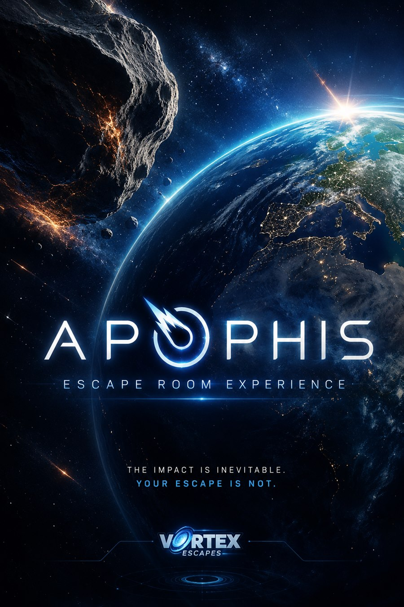

Sala destacada #223
Apophis
Vortex Escapes
Nota global: 9.2/10
Apophis de Vortex Escapes en Terrassa. Nota global 9.2/10 con 3 fuentes y 2 premios o nominaciones. Consulta datos, sinopsis, ubicación y fuentes del...